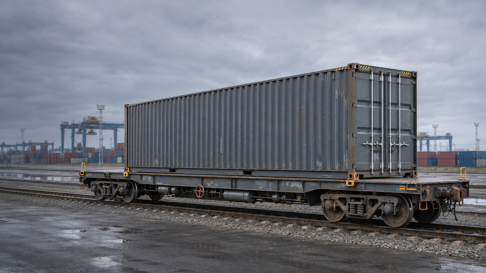

Комплектность
к смене
Критические компоненты поступают к согласованному сроку, в нужной последовательности.

ЛОГИСТИКА
КОНЦЕПЦИЯ ДЛЯ ОБСУЖДЕНИЯ
Концепция логистического оператора
для производственного потока АГР.
Целевой объём проработки
Санкт-Петербург · Калуга · Круглое Поле
01 / ПРИОРИТЕТЫ ЛОГИСТИКИ
ОПТИМИЗАЦИЯ · ТОЧНО В СРОК · РИСКИМаршрут, парк и график — в увязке
с производством. Управление рисками
срывов и дополнительных затрат.
Критические компоненты поступают к согласованному сроку, в нужной последовательности.
Снижение запасов — только при сохранении надёжности поставок и без роста дефицита.
Оценка полного цикла: доставка, парк, возврат, простои и обслуживание.
3 000 SKD в месяц — целевой объём обсуждения. Схемы маршрутов и распределение потока требуют подтверждения.
02 / СОЗДАНИЕ ЛОГИСТИЧЕСКОГО ОПЕРАТОРА
МОДЕЛЬ УПРАВЛЕНИЯ И АКТИВОВЕдиное управление договорами, маршрутами,
парком и рисками. Доход — от услуг;
прибыль оценивается на полном цикле.
АРЕНДА ПЛАТФОРМ И КОНТЕЙНЕРОВ
Вариант для пилота и уточнения потребного парка. Объём аренды можно согласовать под фактическую загрузку и оборот.
ПОКУПКА ПЛАТФОРМ · АРЕНДА КОНТЕЙНЕРОВ
Контроль платформ сочетается с арендой контейнеров. Потребность в каждом виде техники оценивается отдельно.
СОБСТВЕННЫЕ ПЛАТФОРМЫ И КОНТЕЙНЕРЫ
Собственный парк — вариант при устойчивом объёме и подтверждённой экономике. Гарантию потока необходимо закрепить договором.
Прибыль оператора и общий эффект для группы оцениваются отдельно. Парк — после проверки потока и экономики.
03 / ИСТОЧНИКИ ЭФФЕКТА
СТОИМОСТЬ ПОЛНОГО ЦИКЛАКаждое улучшение оценивается вместе
с влиянием на выпуск, оборот
и потребность в физических активах.
Подтвердить упаковку и загрузку контейнера. Сопоставить поездные и отдельные отправки с производственным графиком.
Критерий: комплектность поставки и стоимость на комплект.Контейнеры и платформы имеют разные циклы. При отдельных отправках или смене маршрута увеличение оборота может потребовать большего физического парка.
Критерий: полный оборот, простои и достаточный резерв.Встречная загрузка полезна, если доход покрывает дополнительный маршрут, обработку, время и парк. Скидка на порожний возврат зависит от направления и действующих решений РЖД; автоматически применять её нельзя.
Критерий: чистый эффект без ухудшения следующей подачи.Сопоставить предложения перевозчиков и операторов. Отдельно проверить применимость специального коэффициента к контейнерной отправке Владивосток — Калуга-1.
Критерий: письменное подтверждение состава ставки и условий.Полная стоимость перевозки / Поставка точно в срок / Прибыль оператора
04 / ОЖИДАНИЯ ПО СПЕЦТАРИФУ
ТОЛЬКО ГРУЖЁНЫЙ КОНТЕЙНЕРНЫЙ РЕЙСВозможное снижение тарифа. Только после согласования.
Необходима формализованная работа
с профильными госорганами и РЖД:
обоснование, обращения и письменное решение.
Подготовить объём, маршрут и график гружёных контейнерных отправок, оценку ожидаемого эффекта.
Оформить обращения в профильные госорганы и РЖД. Закрепить ответственных и план согласований.
Согласовать спецтариф, его базу, срок действия и условия применения только на гружёный контейнерный рейс.
Ориентиры снижения применимой железнодорожной части прейскурантного тарифа. Коэффициенты 0,90 / 0,70 / 0,50. Требуют согласования.
Спецтариф пока не согласован; его получение не гарантировано. Эти ожидания относятся только к гружёному контейнерному рейсу и не включают порожний возврат. Его тариф и возможность скидки проверяются отдельно. Проценты не означают снижение полной себестоимости.
05 / ПОСЛЕДОВАТЕЛЬНОСТЬ ЗАПУСКА
ОТ ДАННЫХ К РЕШЕНИЮПилот должен подтвердить доходы и расходы
полного цикла, а также надёжность поставок
до расширения бизнеса.
Объём, упаковка, договоры, действующие тарифы, терминалы и доступность техники.
Предлагаемый критерий — не менее двух полных оборотов. Зафиксировать выручку, затраты, прибыль и сроки.
Сравнить аренду и владение. Расширяться при подтверждённой прибыли и надёжности поставок.
Пилот подтверждает прибыль после всех затрат.
Надёжность снабжения производства сохранена.
06 / ПРЕДЛОЖЕНИЕ К ОБСУЖДЕНИЮ
ПРОИЗВОДСТВО · ЛОГИСТИКА · ФИНАНСЫПЕРВЫЙ ШАГ
Согласовать поток, условия перевозки и границы пилота.
Выбрать модель парка по результату полного цикла.
Параллельно — формализованная работа с РЖД и госорганами по тарифной стратегии.
01Поставка точно в срок и управление рисками
02Прибыль оператора после всех затрат
03Обоснованное использование капитала